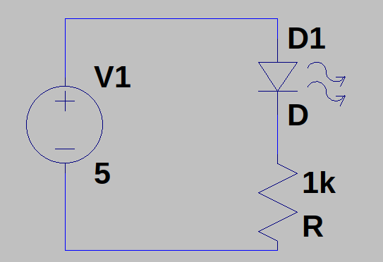
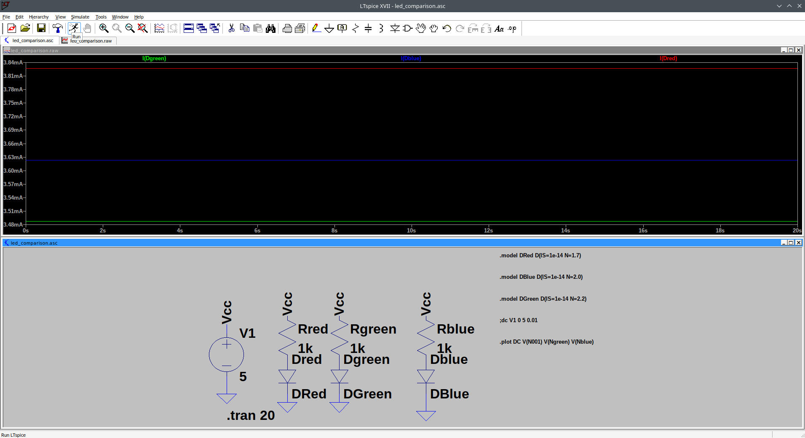
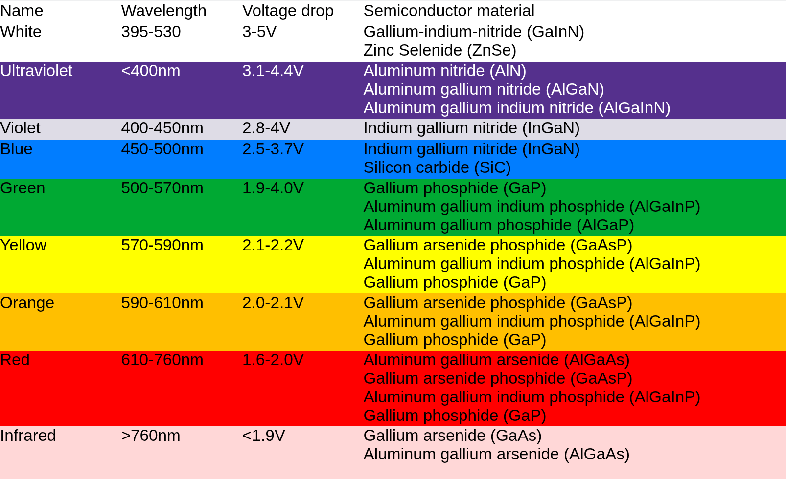
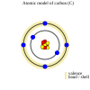
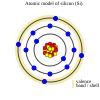
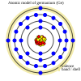
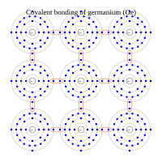
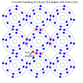
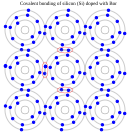
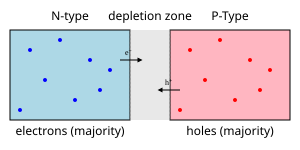

Electronics 103 - nonlinear components
From the first view on electronics, we now want to deepen the understanding components like diodes and -more important - Transistors and CMOS technology. We want to show that a transistor is both analog and also digital depending only on which level - or layer of abstraction you want to look at…
The (simple) LED circuit
First we want to show one of the simplest possible circuits, some that lighten your day (or night, pun intdnded).
Diodes in schematic circuit |
 |
A light emitting diode (LED) does not go without its pre-resistor which is there to limit the currents that goes thru the LED. You can take a resistor from 1kOhm to 10kOhm,the precise vale is in most csases uncritical… But for you to verify the equation is as follows:
\large \[ R_{V} = \frac{U_{\text{Total}} - U_{R}}{I} \]
With that equation we can calculate the value for the resistor - after calculation we just use the next-higher available resistor in the E24 series. For the purposes I describe here, 1/4 Watt resistor are sufficient, even 1/8 Watt resistors are
Now, we want to see happens when we switch the poles, then the diode is working in reverse polarity and so not lighting up…
LEDs came in a big variety of diffenrent sizes, shapes and colors, for example size differs in different smd sizes e.g. 0805 as well as in different shapes (see here). But first and foremost color is crucial. The different dotation make up for different colors.


semiconductor materials
 |
 |
 |
Let us start our tour over semiconductor devices with a small repetition of this topic from electronics 101
If we can make sure that the semiconductor material, here silicon, is not polluted oder doped, with any tri- or pentavalent material the only interesting factor here is the temperature - given, this is room-temperatured (25°C), silicon is a non-conductor..
Examples of tetravalent elements: |
|
 |

negative doping (or pentavalent elements)
Pentavalent elements (for example Bor)
Examples of pentavalent elements: |
 |
positive doping
Trivalent elements (for example Arsen)
Examples of tetravalent elements: |
 |
When we put both of the elements mentioned above together, (1.) the negative doped semiconductor material with the p-doped material, we achieve a very interesting behaviour at the pn-junction.
What Happens at the Junction?
(1.) Diffusion Starts: Electrons from the N-side move to the P-side (because electrons want to fill the holes). Holes from the P-side move to the N-side.

(2.) Depletion Region Forms: When electrons and holes meet, they cancel each other out. This creates a neutral zone in the middle with no free charge carriers — this is called the depletion region. An electric field builds up here that prevents more electrons and holes from moving across.
(3.)Equilibrium is Reached: Eventually, a balance is reached. Electrons want to move across, but the electric field pushes them back.
What Happens When You Apply Voltage? Forward Bias (positive to P-side, negative to N-side): Pushes electrons and holes toward the junction. Current flows across the junction.
Reverse Bias (negative to P-side, positive to N-side): Pulls electrons and holes away from the junction. Depletion region gets wider. Very little current flows.